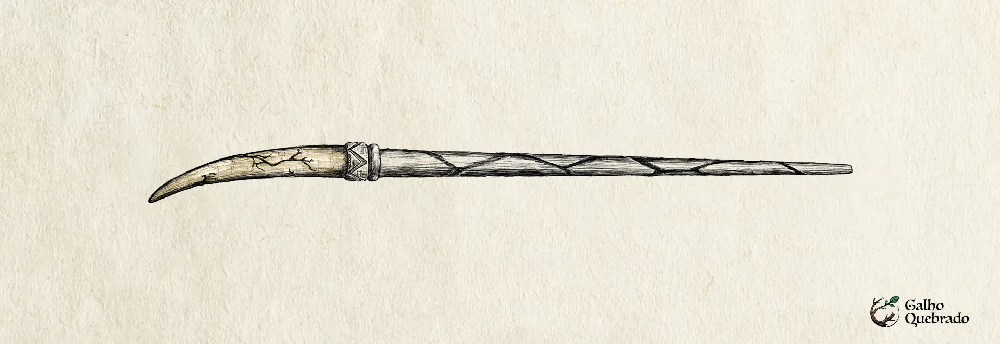

Tïa Rendu
- Região: Nordeste;
- Estado: Maranhão;
- Núcleo: Dente da Serpente Encantada;
- Material: Palmeira do Babaçu
- Flexibilidade: Flexível;
- Tamanho: 32 cm;
- Significado do nome: Dentuça.
-
História e Origem Hoje finalizei uma varinha que desafia tudo o que conheço sobre essa arte. Tïa Rendu. Um nome que ressoa como um eco nas galerias subterrâneas de São Luís, onde algo antigo e imenso se move sem nunca ser visto. Essa varinha é diferente de todas as que já criei, pois seu núcleo e seu cabo são uma única entidade, uma fusão que nunca imaginei ser possível. Seu coração é um fragmento da Serpente Encantada, a criatura colossal e imortal que desliza pelos aquedutos subterrâneos da cidade, crescendo sem parar, tecendo sua própria lenda. A crença popular diz que, se um dia sua cabeça encontrar sua cauda, será o fim de tudo, um colapso inevitável. Ela nunca pode se completar, nunca pode ser inteira.
E, no entanto, aqui está ela. Um fragmento de sua mente cristalizada, uma lasca de pensamento, de consciência, servindo de coração para essa varinha e, ao mesmo tempo, estruturando sua espinha. Para conter tal poder, escolhi a Palmeira de Babaçu, uma madeira símbolo do Maranhão, versátil, resiliente, capaz de se adaptar às circunstâncias mais adversas. Desde tempos imemoriais, o babaçu tem sido utilizado como remédio, alimento e sustento, um verdadeiro presente da natureza, e agora, ele segura o caos do núcleo, como a terra segura as raízes de uma árvore que nunca para de crescer.
Com 32 centímetros de comprimento e uma flexibilidade surpreendente, Tia Rendu não pertence a qualquer bruxo. Ela não aceita hesitação ou incerteza. Apenas aqueles cujo poder transborda, que não podem ou não desejam contê-lo, serão capazes de empunhá-la plenamente. Ela pertence a quem carrega a magia no sangue, a quem é incapaz de silenciar o chamado do poder. Segurá-la pela primeira vez foi como tocar em algo vivo. Senti um pulsar, quase um sussurro, um eco distante de um ser que nunca dorme.
Quem for escolhido por essa varinha precisa estar preparado, pois sua magia jamais será contida da mesma forma. Assim como a serpente, o poder crescerá, se expandirá e buscará se transformar. Tia Rendu não é apenas um instrumento. Ela é um elo com algo maior, algo que jamais poderá ser verdadeiramente domado.
-
Etimologia - "Tïa" significa "dente". - "Rendu" significa "destacado" ou "proeminente". Portanto, "Tïa Rendu" pode ser usado para descrever alguém com dentes grandes ou destacados, no sentido de "dentuça" em Tupi-Guarani -
